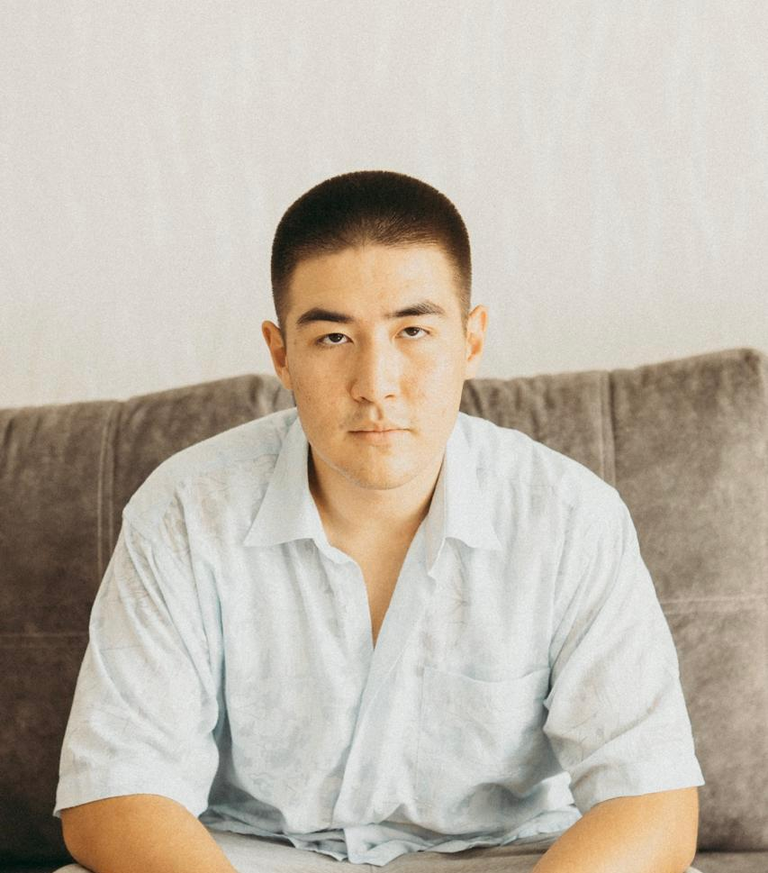
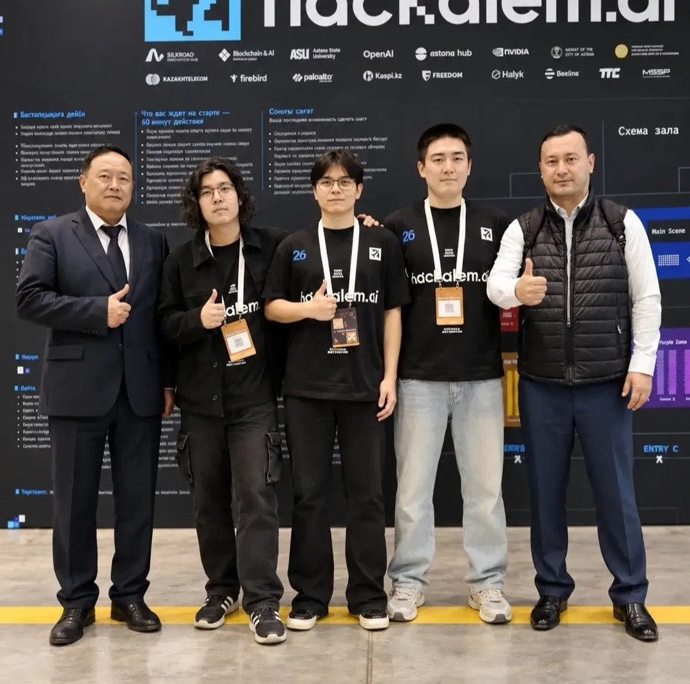

01 / CLIENT WORK · HEALTHCARE
Qazaq Clinic
Страницы УЗИ, формы записи и поддержка сайта клиники.
Привет, я Алихан.
Продумываю структуру, создаю дизайн и собираю сайт — от первого макета до запуска. Помогу с новым проектом или доработаю существующий.
01 / SELECTED WORK
Сайты клиентов и собственные проекты.
У каждого проекта — своя логика.
01 / CLIENT WORK · HEALTHCARE
Страницы УЗИ, формы записи и поддержка сайта клиники.
02 / CLIENT WORK · EDUCATION
Многостраничный сайт и образовательное направление Tech Orda.
03 / PERSONAL PROJECT · FRONTEND
Каталог фильмов: поиск, карточки и данные из TMDB в одном интерфейсе.
На превью — работающие сайты. В кейсах — мои задачи и вклад в проект.
02 / HOW I THINK
Сначала разбираюсь в задаче.
Потом выбираю инструменты.
Выстраиваю структуру, пользовательский путь и визуальную систему. Делаю интерфейс, в котором легко найти главное и перейти к действию.
Собираю адаптивные страницы на Tilda и разрабатываю интерфейсы на React и Next.js. Работаю с формами, API и состояниями интерфейса.
Обновляю страницы, проверяю формы и поддерживаю контент. Смотрю, как сайт ведёт себя на разных экранах, и исправляю то, что мешает пользоваться.
СлушаюЗадача, аудитория, контекст
ПроектируюСтруктура, прототип, дизайн
СобираюВёрстка, логика, интеграции
ДовожуПроверка, запуск, поддержка
03 / THE PERSON BEHIND

Я Алихан — веб-дизайнер и frontend-разработчик. Проектирую и собираю сайты: соединяю визуальный стиль, понятную структуру и техническую реализацию.
В моём опыте — сайты для Qazaq Clinic и AY Consults, собственный MediaShelf на Next.js и практика в Sergek Technologies и Центре педагогического мастерства.
Работаю и с данными.Python, SQL и Power BI — для анализа и визуализации.
+ BEYOND THE SCREEN
АСТАНА · 2026
Принял участие в хакатоне HackAlem AI в Астане, посвящённом агентному искусственному интеллекту.
04 / LET'S MAKE SOMETHING
Большие вещи начинаются с «привет».Выберите задачу. Первые слова уже готовы.